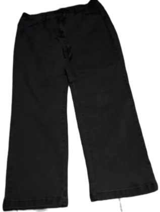

your closet, remixed
What should I wear today?
FitCheck.AI picks an outfit from the clothes you actually own, for where you're going and what the weather's doing, shows it as a realistic photo of a person wearing it, and tells you why it works.
Real photos of real clothes; "See it on a person" makes a realistic AI photo with free, open-source models. Signed in, outfits come from your own wardrobe and weigh the occasion, the weather and your feedback.
No photo? Just say it.
Type black hoodie
and FitCheck.AI shows a real photographed hoodie, dyed to your
colour in the CIELAB colour space so the folds and seams stay. Upload a photo instead and
it cuts your piece out of the background so the model can wear it.

Cheap basics, good pairings
A plain shirt and the right trousers beat an expensive outfit that fights itself. Every combination below uses basics you can find for under $40 a piece, photographed by free, open-source AI the same way your own outfits are.
Closet to outfit in three
-
Hang up what you own
Snap each piece or just name it. Tag what it is, its colours, the seasons and occasions it suits.
-
Say where you're going
Pick the occasion, the weather and the temperature, plus a style or colour mood if you like.
-
See it on a real person
A realistic AI photo of someone wearing your own pieces, with a score out of 100 and the reasons. Keep it, save it or ask for another.
Every outfit comes with its paint chips
Some things are true for everyone. You don't wear sandals in the snow, and a suit is overkill for the gym. Simple rules handle those.
Other things are true only for you. Two machine-learning models learn from the outfits you like and skip. Until they've seen enough of your feedback, the rules carry the score.
Your wardrobe already holds more outfits than you think.
No ads, no tracking, no selling data: your wardrobe is stored securely and only you can see it.
Start your wardrobe